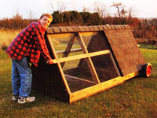
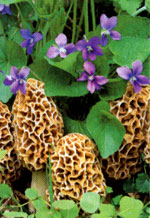
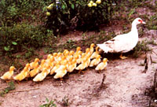
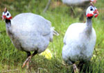

This portable mini-coop lets your chickens enjoy fresh pasture while keeping them safe from predators-and out of your garden.
We live in the country and have kept hens or more than seven years, so I was delighted to read your series of articles on these comic critters ("Eggstravaganza") in the February/March 2003 issue.
Your portable coop (shown at left) is a great idea and has the added advantage of keeping the eggs where they can be found easily (unless a daily egg hunt is considered a fun family activity).
Two tips for the novice: As the winter solstice approaches, days grow shorter and egg production naturally declines. A single, 100-watt lightbulb, plugged into an inexpensive timer and set to come on about 3 a.m. and go off at dawn, will simulate dose to the 14 hours of daylight chickens seem to prefer for daily egg-laying. (One note of caution: Hens are curious creatures and will peck at almost anything, so the lightbulb should he mounted well out of their reach)
Also, hens are drawn to the rich soil of flower beds and veggie plots, but their scratching for hugs can be incredibly destructive. Under their busy feet, carefully laid mulch will go flying, along with newly planted annuals and tender, young seedlings! Keeping them in the portable coop allows you to control where they scratch for hugs, too, helping protect your garden.
JUDY AUGUST
Wilderville, Oregon
As a reader with pets, I was interested in your August/September 2002 article on flea control and surprised it didn't include the best remedy I've ever encountered: borax.
Sprinkling borax onto clean, well-vacuumed carpet, bedding, chairs and sofas works perfectly, although not immediately. In about six weeks, the fleas disappear from the house. This method interrupts their life cycle at the larvae stage, and this is why it takes time to be effective. One good treatment lasts at least a year.
Borax (sold in the laundry-soap section in supermarkets) is a fine, white powder. After pushing it through a strainer to get out the lumps, broadcast it by hand, a yard or so above the floor/chair level. If the carpet is a dark color, a light sweeping sends the little grains into the nap, where they disappear from view.
Because it's inexpensive and effective (after six weeks), this method may be the best flea control of all.
ELIZABETH HARDISTY
Mercer Island, Washington
Borax is relatively nontoxic to humans, but we would not recommend letting young children play on the treated carpets. Also, do not apply borax or other boron-containing products to the soil; excess boron will permanently damage your soil.
- MOTHER
I recently discovered an effective yet humane way to de-mouse my pantry. We live in an old farmhouse and at the onset of winter, mice invade our home. Our pantry is a favorite target. I put an empty box of peppermint tea in with my paper recyclables and noticed the mouse activity dropped dramatically. I now place a few squares of cotton cloth sprinkled with peppermint oil in the pantry, refreshing them as needed. No mice, and it smells wonderful!
SUSAN WOMERSLEY
Topeka, Kansas
I read the article in the April/May 2002 issue about morel mushrooms. I am crazy about finding them and have my secret spots, too.
Here's how to increase the odds of growing these delicious fungi in your own back yard: Submerge a batch of morels in a pan of water with a plate on top and place the pan in the refrigerator. After a few hours, take the pan to your back yard (or other "secret spot") and pour the water around a tree. The idea is that the soaking water now contains tiny morel spores. Twice after having done this, I had yellow morels grow in my suburban yard, miles from the woods.
ROY SHEPARD
Culver, Indiana
Why do some folks jokingly call the mosquito the state bird here in Minnesota? Because they're big, they're aggressive, and there are lots of them here in the summertime. Most-if not all-people hate them, but our Muscovy ducklings (shown above) just love them-for feed, that is. Young ducklings, from the second day of their lives, go after those bloodsuckers all day long. By the evening, the little ducklings are so stuffed they can hardly move. They probably take care of thousands of mosquitoes and other small insects.]
O ur yard is practically mosquito and tick-free without using any chemicals. Grasshoppers also are a favorite snack, if the mother ducks don't get them first. The only bugs the ducks don't care for are the box-elder bugs, except when they see a flying one, mistaking it for a mosquito. I'm keeping the ducklings out of the garden, though, as they like to nibble on young vegetable plants, too.
ANDY TOMSEVICS
Isanti, Minnesota
You can order Muscovy ducks from: Sand Hill Preservation; (563) 246-2299; sandhill@netins.net ; and Hoffman Hatchery; (717) 365-3694; www.hoffmanhatchery.com .
-MOTHER
I read the article on chickens and pest control (February/March 2003), and thought I would drop you a note about my ducks.
I have three horses boarded on 6 acres here in Kentucky. For years I had a terrible problem with face flies, deer flies and ticks. We even had the 2-inch-long "horse flies" in huge numbers; one year, I swatted 15 during an hour-long riding lesson. The bites are terribly painful, and the horses go crazy trying to get away from these bloodthirsty pests.
Then, someone gave me six Muscovy ducks. They did very well the first summer, but that winter coyotes got all but one nesting female. She hatched out 16 ducklings, and the fun began.
Those little ducklings were hungry all the time. They would hang out in the horse stalls, snapping up every fly they could catch. You've heard the saying, "Like a duck on a June bug," haven't you? It's an amazing sight to see: Little bitty ducklings hunting bugs like cats after mice. These little guys would position themselves in all the places the flies would lay their eggs, and feast on the incoming flies. They made a good-sized dent in the bug population; I haven't had a tick on me since that year, and I'm a tick magnet.
We kept a closer eye on this generation, so we didn't lose any over the winter. It included eight females, who hatched out from 12 to 20 ducklings each the following spring. The coyotes and the cats kept busy, but the females didn't give up. As a batch of ducklings hatched, they all crowded together, not really caring which hen they followed. My females would take up in pairs, two "moms" for about 20 ducklings, then the rest would start laying again. The last batch hatched in August.
We have a small pond, so the ducks never stray very far. However, the pasture borders on a subdivision. I've gone out to feed many an afternoon to see ducks all over the neighborhood. When I start to feed the horses, the ducks will start to fly in, or I will call them with a bell. Usually they are already waiting, as feeding time is 4 p.m. For some reason, my neighbors don't mind the ducks at all, and will come over to chat with me about what kind of mischief they've been up to.
Three things that I didn't know earlier about Muscovy ducks: They are strong fliers, they like to perch on houses, gates, trees, fences and barn roofs, and they are really quite tame.
Also, we have had the West Nile Virus break out in the horse population here; I was fortunate to have my ducks on mosquito patrol until I could get my horses vaccinated.
KATHLEEN CALLAHAN-JORDAN
Radcliff, Kentucky
Any time I am rototiling my garden, I usually let my chickens out of their pen because they follow right behind the tiller, catching any hugs-especially grub worms-that happen to be turned up by the tiller.
When I harvest my corn, I walk among the stalks and push each one over with my foot as I pick the ears. This usually sets the grasshoppers and other bugs to going every which way. The chickens are right there to enjoy this "hug smorgasbord," too.
Each year, some species of bugs flourish. Last year it was crickets, and this year it's grasshoppers. I am the only one around here who has no problem with the annual bugs. When I see an invasion of bugs coming, I just let the chickens out, and they enjoy another feast.
If any vegetables or fruits are picked overripe, the chickens will love 'em! Over the years, I have discovered that chickens will eat anything but bones, watermelon rinds and cantaloupe skins.
KENNY LILES
Grady County, Oklahoma
We have about 50 guinea fowl. We use them mostly for bug control in the gardens. We originally got five of them for tick control because my 82-year-old dad said it would work. Within six weeks we stopped seeing ticks. The fleas disappeared within a year; our three cats never need any form of flea control. Guineas also gobble down many other bugs; even 2-week-old keets go nuts when you give them a grasshopper to fight over.
These birds also are great for snake control. I have seen them kill everything but a rattlesnake. They just circled it for hours and screamed bloody murder until we took the snake away. Poor little rattler was terrified. We also have never lost even one of our pasture-range chickens to birds of prey. The guineas let out a warning if a hawk is near, and the birds all run for cover. I have witnessed a group of guineas chase two foxes in the pasture. These birds are definitely mischievous, entertaining and much more intelligent than chickens. Here in the Smokies they also were used to sound a warning for the moonshiners, to help protect the stills.
ROBIN BUCKING
Waynesville, North Carolina
I n 1998 my husband and I took over the family farm. We soon discovered the pastures were infested with ticks and other crawling critters. Soon afterward, my husband developed Lyme disease. We were desperate, but we did not want to use poisons, as that would ruin the land for our cattle and our pets.
Someone told us to get some guineas, as they were great for pest control. We purchased some adult guineas, but they continually escaped. Finally, we decided to start with babies. We began to turn them out during the day to forage when they were 5 weeks old. At night, we put them up for their own protection. It took awhile, but we began to see the difference: This past year, our upper 25-acre pasture was tick-free. The guineas truly have been a blessing to us.
We added two geese to our poultry flock this past summer. At night, they all go in to roost together. They have an order as to who goes in first and last. The chickens go in first, then the guineas, then our rooster and, finally, the geese.
SUSAN JARRETT
Dover, Arkansas
Purchasing by mail order is the best way to get healthy chicks and a greater variety of breeds than local feed stores usually offer. But you have to order a minimum of 25 chicks so they can keep each other warm during shipping, and this often is more birds than most people want.
I found a solution to this 'minimum 25 chicks' problem. These same feed stores may be willing to buy the chicks you don't want. You won't get full price, but your neighbors will have access to new and unusual breeds. I only got 50 cents each, but at least I got a little of my investment back and the birds found homes.
ALLEN THOMPSON
Ocoee, Florida
I have been meaning to write to you on so many subjects since I first got a subscription in 2001. But the subject of poultry pest patrols hit home. We bought our dream property in June 2002 and have been working happily ever since to make it into what we really want. One of the goals was to have chickens. Fresh eggs, the farm atmosphere, roosters crowing in the morning-the whole effect. What we didn't realize was that we also would have a solution to a major pest problem here in our area: We have millipedes -hundreds of big, long, black ones! They invade our house, even the upstairs!
Well, when our chickens started to free-range several months ago, we noticed that our millipede problem was diminishing. At first we thought it was was the winter season that had discouraged the bugs, but now that the weather has warmed, we still are not having the problem we did last year, thanks to our wonderful Barred Rock chickens! So if anyone has the problem that we had with millipede migration, we can attest to an easy solution: chickens. We love 'em and are planning on letting them have chicks this year so we can enjoy more.
JOYCE LAWRENCE
Scappoose, Oregon
If you have Poultry Pest Patrol stories to share, please visit our online Community Forum, at our Web site, http://www.motherearthnews.com . For a list of hatcheries that sell mail order poultry, see the Hatchery list in the Community section of the Web site.
-MOTHER
Mother Earth News
|
 Steve Maxwell Andy Tomsevics |
 David Cavagnaro Courtesy Enterprise Mountaineer |
 |
|
 |
|
|